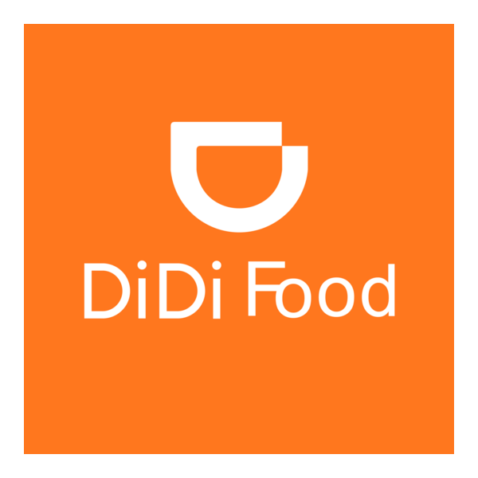

Plataformas Asociadas



HAGA SINO es una empresa moderna de delivery y mensajería estratégica en Antioquia. Operamos bajo estándares de eficiencia, puntualidad y seguridad, conectando comercio digital con distribución urbana optimizada. Nuestra misión es ofrecer entregas rápidas y confiables que generen confianza y crecimiento sostenible.
Conocer másEn HAGA SINO desarrollamos un modelo logístico orientado a resultados, integrando eficiencia operativa, innovación y alianzas estratégicas con plataformas reconocidas. Nos especializamos en entregas a domicilio seguras y oportunas, garantizando trazabilidad y compromiso en cada servicio. Nuestra visión empresarial está enfocada en consolidarnos como una marca líder en soluciones de delivery moderno, ofreciendo una experiencia premium tanto para clientes como para aliados comerciales.
